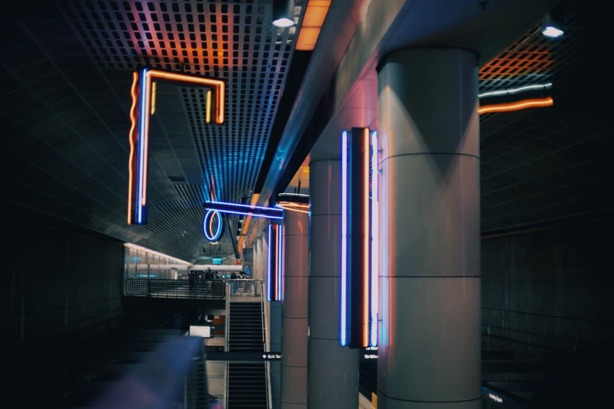

From 2018-2020 my life was consumed by photography.
On this day I was out with my friends in Riverside, California for a day trip. Our only goal for the day was to get to a mountian side 5 minuets away by sunset. It was still mid day so we wandered around Downtown Riverside and our wandering led us to this parking structure. I was trailing behind my two friends when I noticed the way the light was casting a shadow on the stairwwell and admired it for a second. In a rush I captured the photo and went to catch up with my friends.
The same two friends and I often were out very early into the morning enjoying eachothers company and wandaring around various cities when we got sick of our hometown. This day we decided to go to LA, I drove us there but when we got there we decided it would be cheaper to get around if we used the train as finding free parking in Los Angeles can be quite a challenge. I don't remember what stop this was but I remember my fascination with the tasteful placement of the neon lights.

This day was a similar story to the ones previously mentioned, annother late night with a few of my friends except this was a different group of friends. We didn't know what to do so we took some photos in my backyard. This was a little different however because I had a light setup. I don't remember what was said that made Jordan laugh but I remember feeling content; happy to be with good company.
I eventually stretched my legs and started venturing out of my comfort zone and started doing some videography. This project was partivularly challenging because of the amount of direction that was required of me, or at least that is what I was thinking in the moment. In reality I was getting some really clean shots.